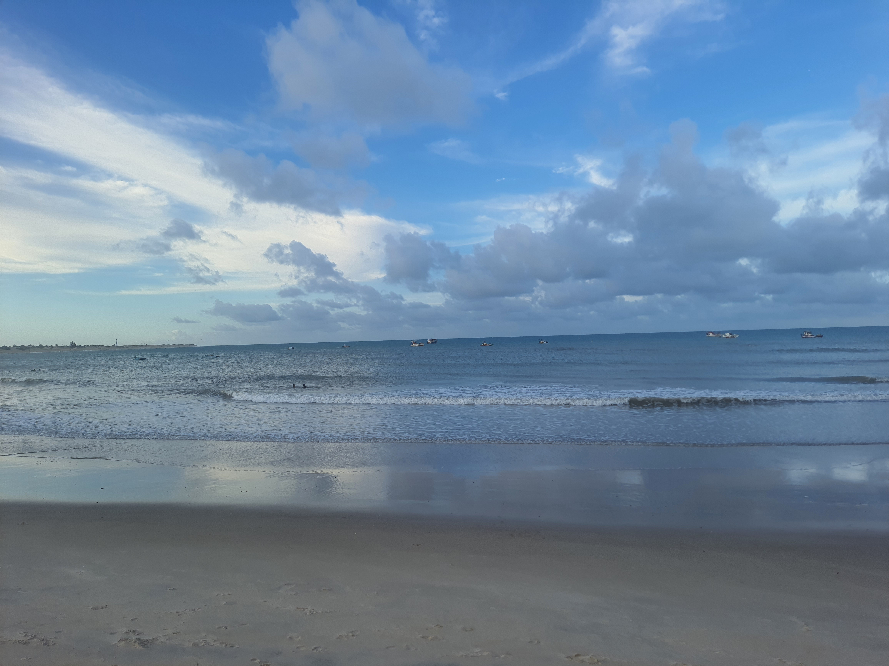
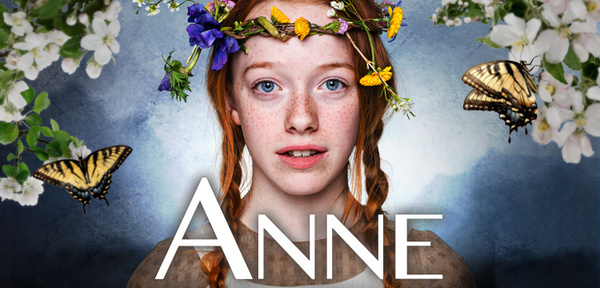
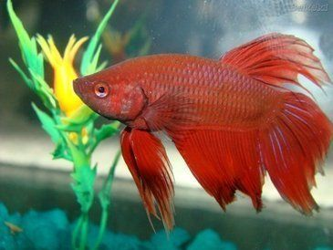

Olá, sejam bem-vindos ao meu blog! Meu nome é Yasmin, tenho 18 anos e moro em Ceará-Mirim/RN. Sou uma pessoa caseira, que ama passar tempo com a família, ir à igreja e maratonar filmes e séries de comédia romântica. Desde pequena, sempre sonhei em viajar pelo mundo, construir uma vida estável, formar uma linda família e, quem sabe, morar pertinho da praia. Aqui no blog, compartilho um pouco do que gosto e do que me inspira. Fique à vontade para explorar e interagir!



| Ano | Escola |
| 2013 | E.M Antonieta Pereira Varela |
| 2016 | E.E Imaculada Conceição |
| 2018 | E.E Monsenhor Celso Cicco |
| 2022 | IFRN Ceará-Mirim |
Quando eu era criança, ainda estava no terceiro ano. A aula já tinha terminado e todos estavam saindo da sala. Eu, distraída, passei entre as fileiras das mesas, mas acabei tropeçando e caí de costas. A sorte é que minha mochila, enorme como sempre, acabou amortecendo a queda. Fiquei lá no chão, parada por uns 30 segundos, morrendo de vergonha. Tentei disfarçar, como se tivesse desmaiado. Então, de repente, ouvi alguém dizendo: "Vai dormir aí?" Não aguentei e, entre risos e mais vergonha, me levantei e fui embora, tentando esquecer o mico.